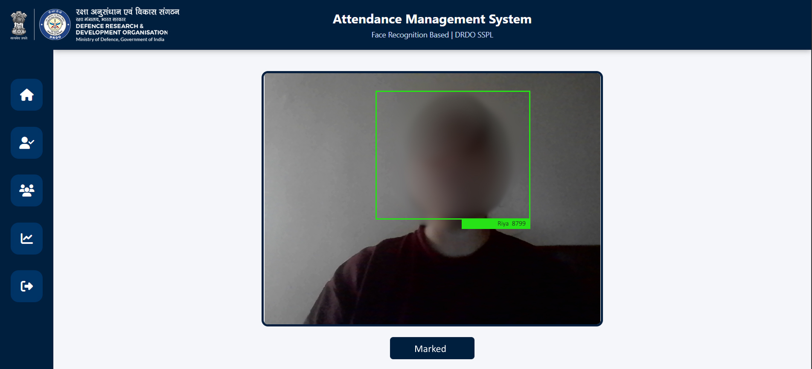

AI-Based Face Recognition Attendance Management System | DRDO SSPL
Project Summary:
As part of a live project at DRDO SSPL, I developed a comprehensive AI-powered Attendance Management System that leverages facial recognition to automate and streamline employee attendance marking. The system integrates real-time image processing with a clean and functional web-based interface for both users and administrators.
Key Features:
- Real-time face detection and recognition using webcam/IP camera
- Automatic attendance marking upon successful face verification
- Intuitive web dashboard for employees and administrators
- Live attendance tracking and history logs
- Secure storage of user data and attendance records
- Notification for unrecognized or duplicate entries
Technologies Used:
Frontend:
- HTML5, CSS3, JavaScript for responsive and interactive UI
- Bootstrap for layout and component design
- Custom login/register pages, live status indicators, and admin dashboard
Backend & AI Integration:
- Python for backend logic
- OpenCV for live face detection and processing
- NumPy for numerical computation
- Dlib for face encoding and matching
- Django as the web server framework
- MySQL for database management
System Architecture:
- Client Layer: Web browser interface for users and admins
- Application Layer: Python backend handling image capture, processing, and routing
- AI Layer: Face recognition model verifying real-time camera input
- Database Layer: Storage and retrieval of attendance logs and user profiles
Impact & Outcome:
This project significantly improved the efficiency of attendance tracking at DRDO SSPL, replacing manual and biometric systems with a secure, contactless, and AI-driven solution. The intuitive UI ensured ease of use, while the backend ensured robustness, accuracy, and security of sensitive data in a defense research environment.